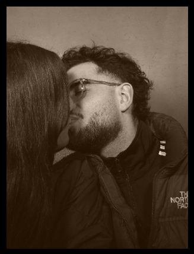
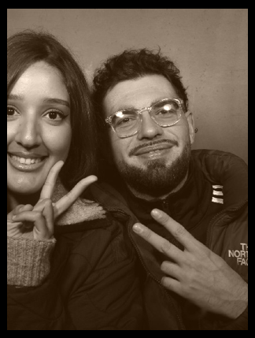

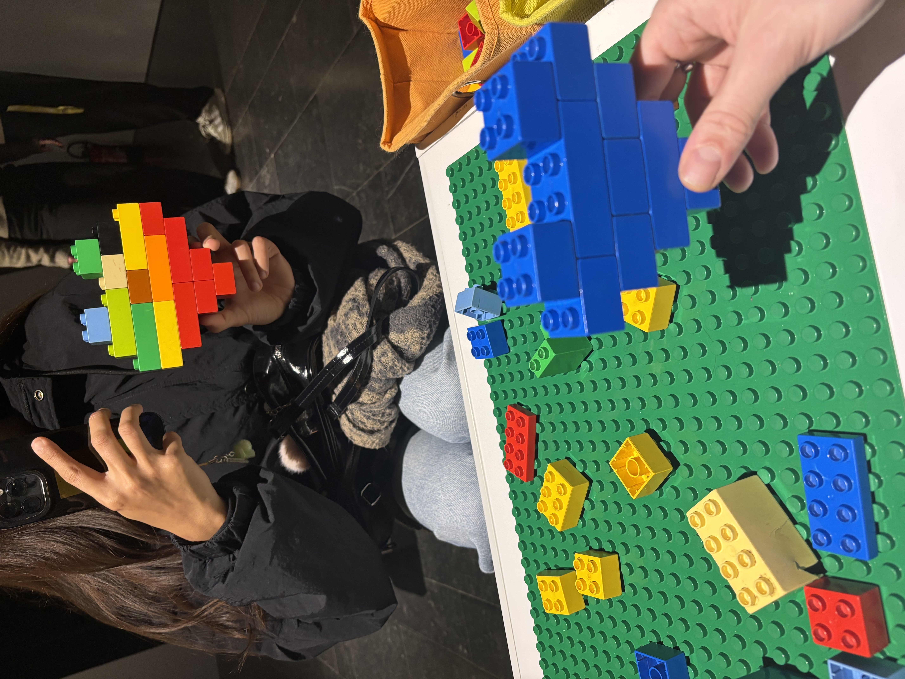
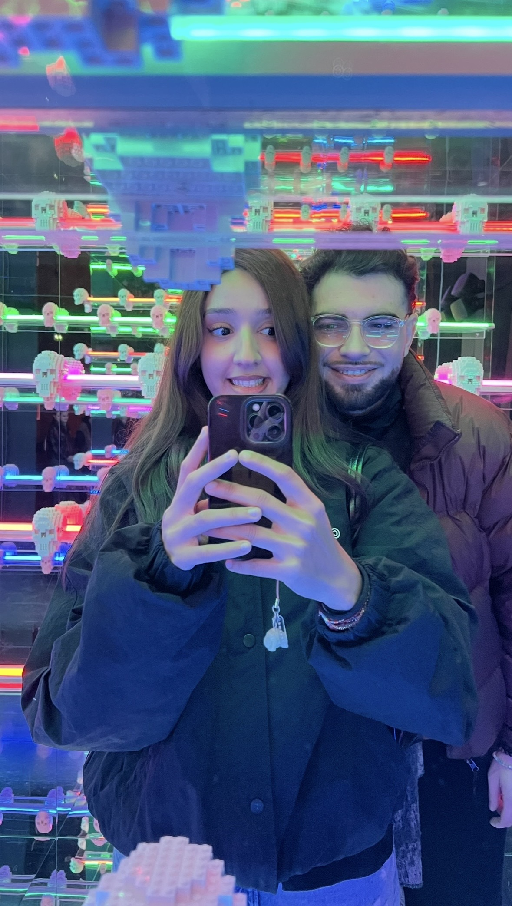
Une histoire pour toi
Hadjer marchait toujours avec une certaine élégance. Elle avait ce regard, cette gentillesse et cette tendresse qui ne peuvent être imités. Quand elle passait, l’on ne pouvait s’empêcher de la remarquer.
Elle aimait voyager. Elle aimait l’Asie et y a même voyagé. Corée, Japon, Thaïlande et la liste continuera de s’étoffer. Elle aimait aussi revenir voir sa famille en Algérie, à Maghnia où elle a grandi. Le soir, elle s’installait confortablement, pour regarder ses dramas préférés et rêver de ses voyages passés et à venir.
À ses côtés, il y avait Louis.
Louis a toujours été attendri par la façon dont Hadjer s’illuminait quand elle parlait d’un voyage à venir, ou ce bonheur quand elle se blottissait dans ses bras pour un câlin. Longs, sincères, rassurants.
Louis aimait profondément Hadjer.
En lisant ces lignes, Hadjer continuait simplement d’être elle-même : passionnée, sensible, élégante, profondément attachante.
Et puis un jour, aujourd’hui, elle tomba sur ces mots. Elle les lut doucement. Elle se reconnut dans ces lignes (enfin je l’espère). Et soudain, elle comprit.
Ce n’était pas une histoire sur elle. C’était une histoire pour elle.
Racontée par quelqu’un qui l’aimait plus que tout. Quelqu’un pour qui son plus beau voyage, c’est elle. Quelqu’un qui, sans jamais le dire au début, était là depuis la première phrase.
C’était moi. Et si je raconte cette histoire, ce n’est pas pour la finir. C’est pour te dire que, peu importe où tu iras, ce sera toujours toi, mon plus bel endroit.
Et que, si tu le veux, je serai toujours là pour te prendre dans mes bras.
Ton donut ❤️
Voila mi donna, une nouvelle étape de notre voyage. Il s'est écoulé peu de temps depuis la première version, mais pour cette occasion il me tenait à coeur de continuer ce site.
Je me sens toujours aussi bien avec toi mon amour, toi tu es toujours fidèle a toi même; drole, sensible, belle, intelligente... j'aimerai que chaque moment passé avec toi, a rire, te câliner, t'embrasser, discuter ne se terminent jamais.
Je t'aime mi donna et te souhaite une bonne Saint-Valentin.
Ton donut ❤️
Joyeux anniversaire mon amour.
Je sais que tu n'a surement pas envie que je te dise que tu as un an de plus mais m'en fouuu blblblll. Pour moi ce n'est qu'un nombre et la femme que j'aime reste elle même. J'espère que tu apprécies ton cadeau ptit chat, pour le moment il n'y a qu'un vinyle donc tu peux profiter mais celui de Fairouz arrivera dans la semaine (celui ou il y a Wahdon dedans hehehe).
Je t'aime mi donna et encore un bon anniveraire a ti.
Ton donut ❤️




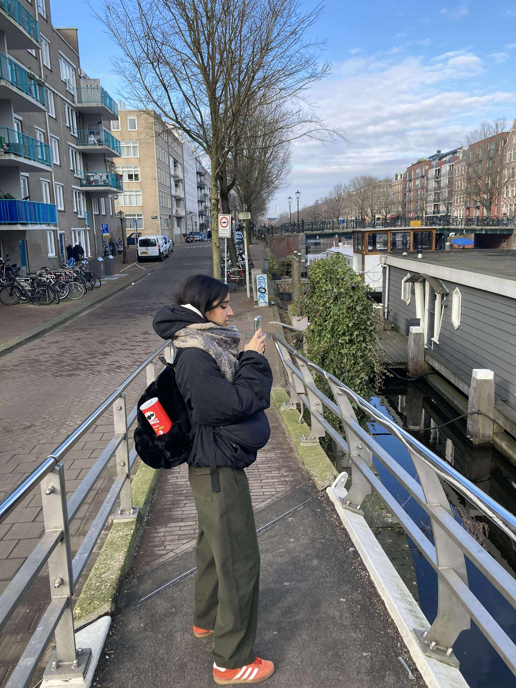
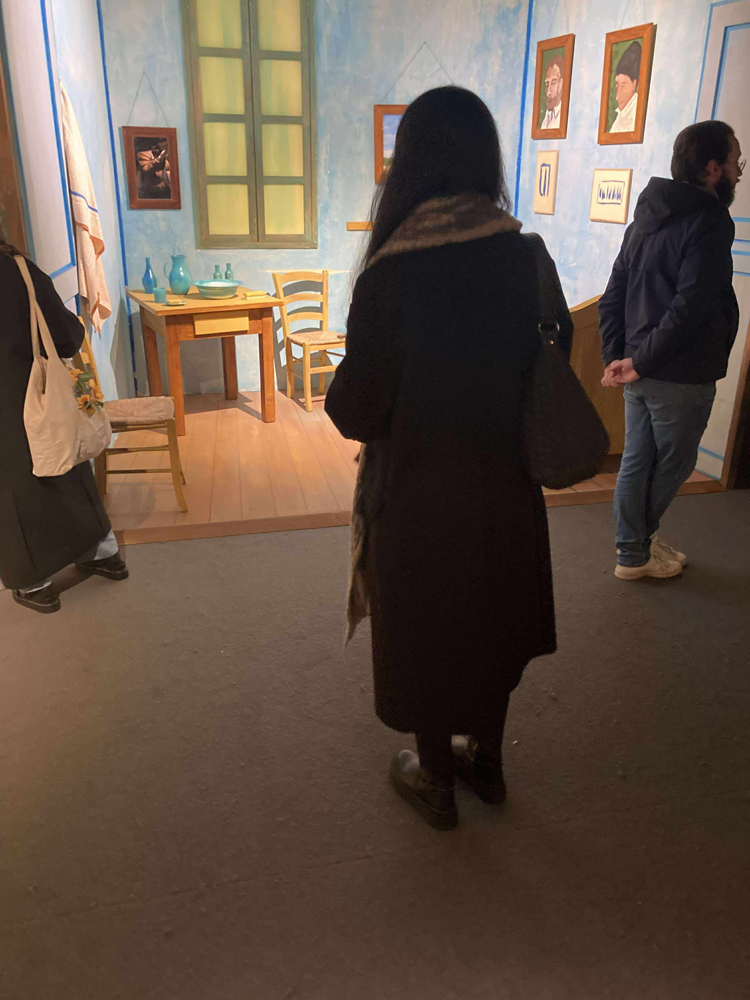
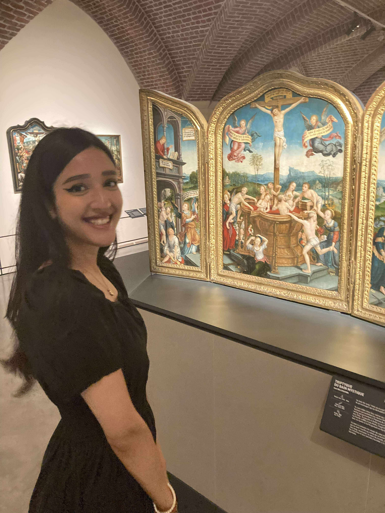
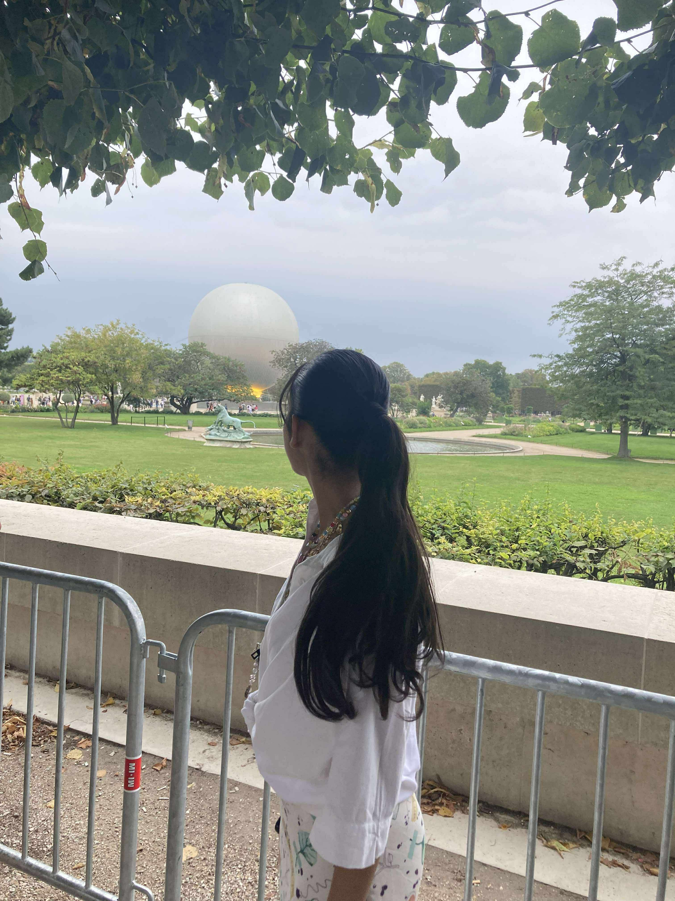
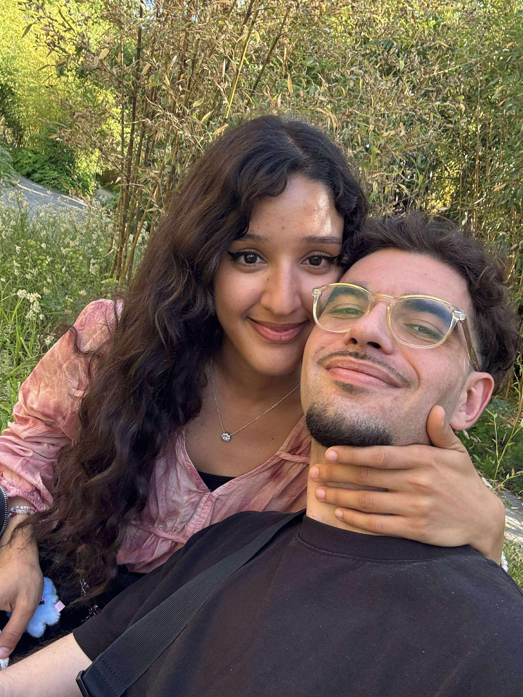
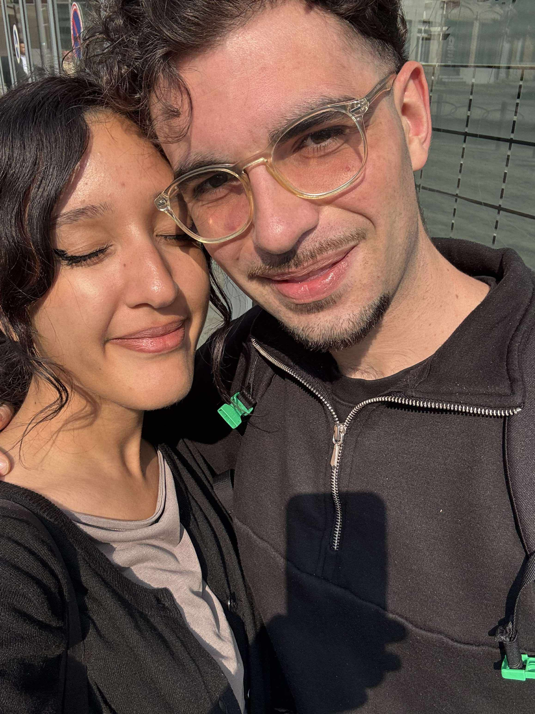
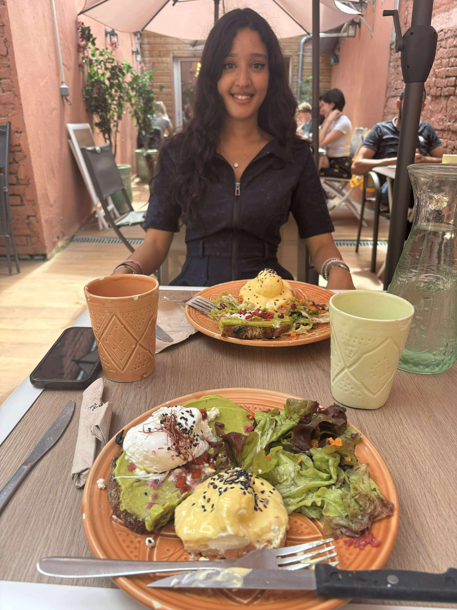
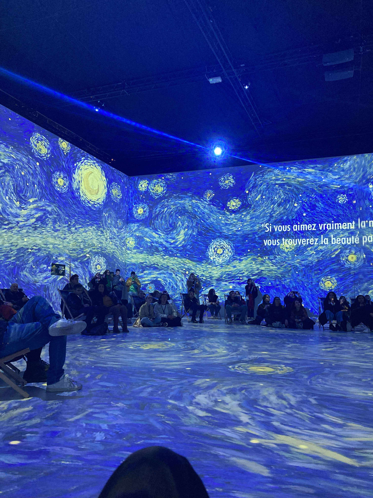
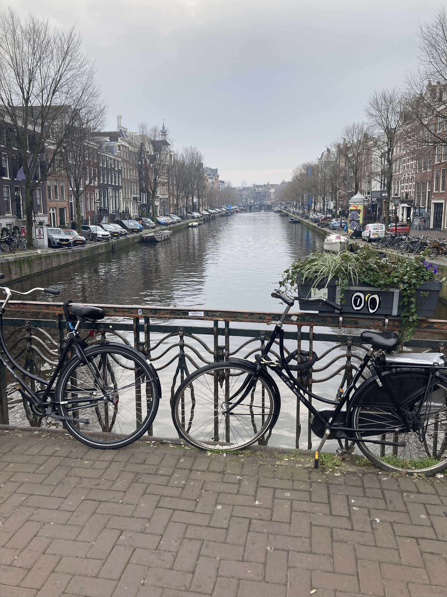
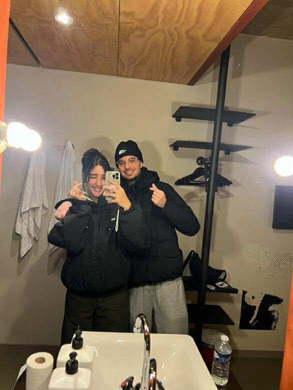
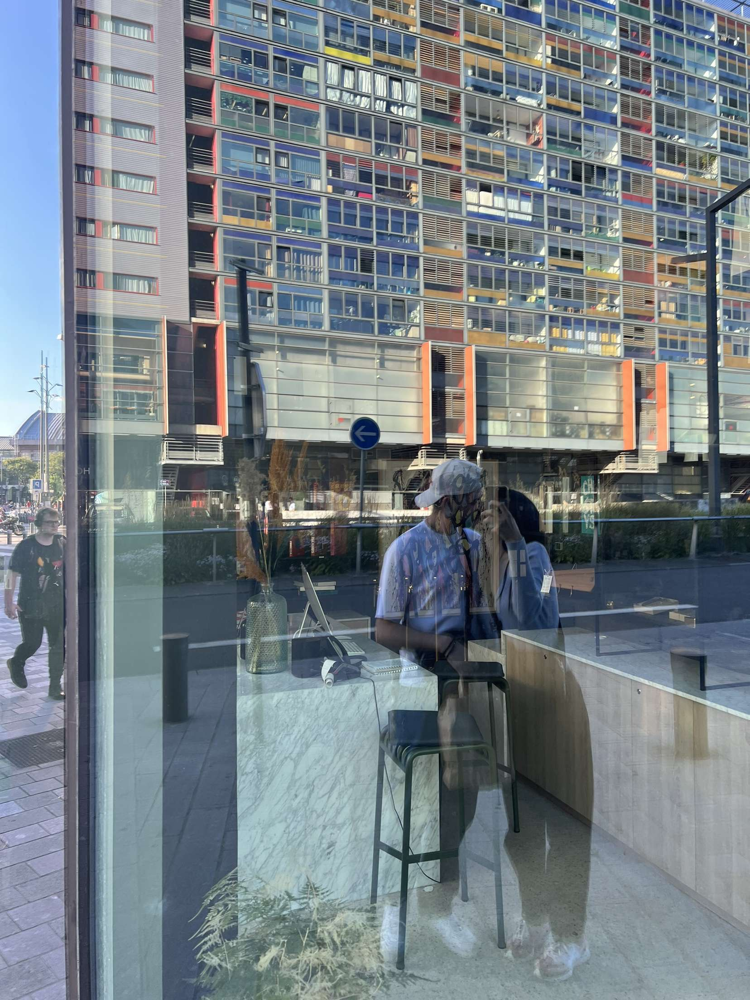
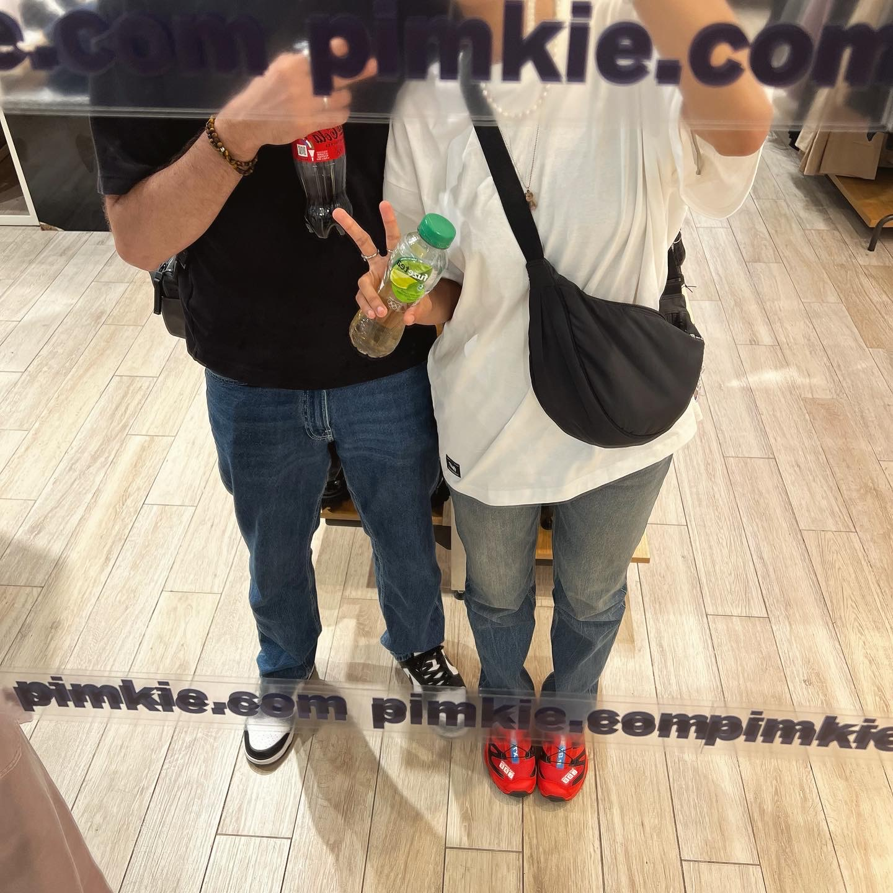